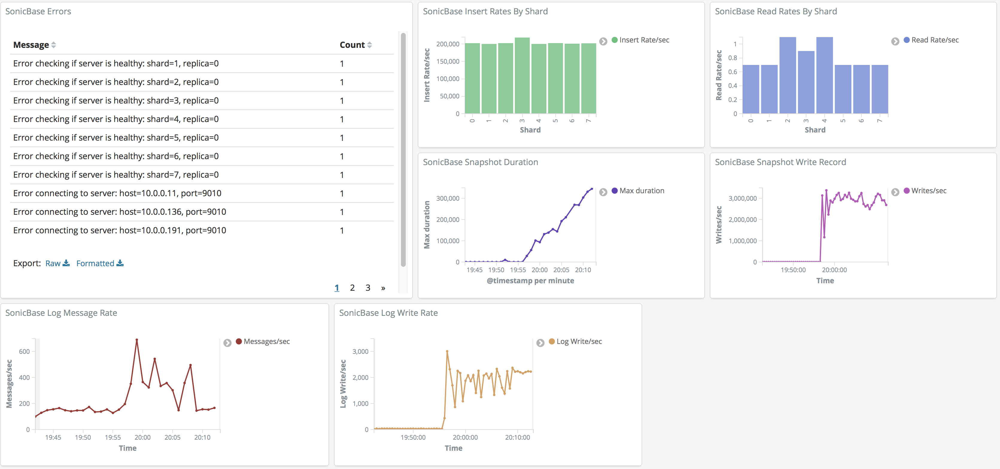
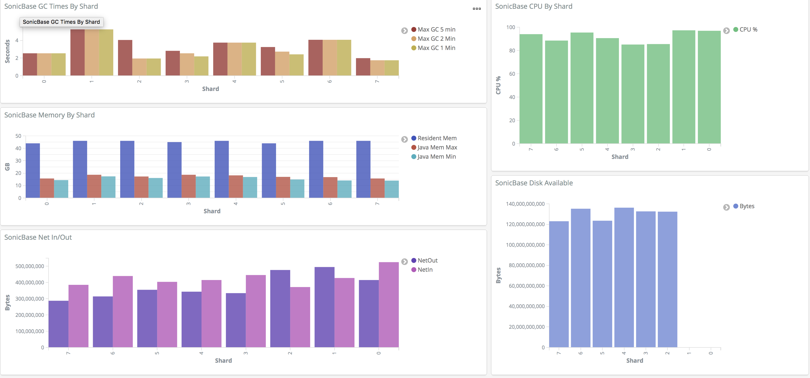
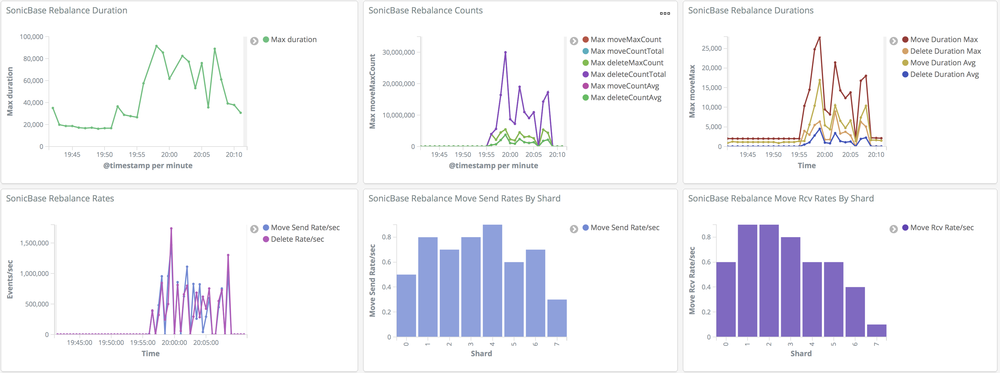

SonicBase. In-memory embedded or distributed streaming sql database
Logstash Integration
SonicBase integrates with logstash to send the SonicBase logs to your Logstash servers. Log messages are parsed for sub-fields in the message of the form [field]=[value]. These fields are sent as separate fields to Logstash so you can search on these fields.Configuration
To use Logstash you need to configure it in your cluster config file. An example of this configuration follows:
logstashServers: 127.0.0.1:9001
Logstash Configuration
You need to configure logstash to receive the messages. An example configuration follows:
input {
tcp {
host => "0.0.0.0"
port => 9001
type => "tcp-json"
}
}
filter {
if [type] == "tcp-json" {
json {
source => "message"
}
}
}
output {
if [type] == "tcp-json" {
elasticsearch {
hosts => "localhost:9200"
manage_template => false
index => "direct-log-%{+YYYY.MM.dd}"
}
}
}
Kibana Objects
You can import Kibana Objects that were created for SonicBase. Download the objects by downloading the file sonicbase-kibana.json.
Import the objects into your kibana by going to Management | Saved Objects and click the import link.
SonicBase Main Dashboard
This dashboard provides basic statistics for SonicBase.
SonicBase OS Stats
This dashboard shows general operating system stats for the SonicBase servers. 
SonicBase Rebalance Stats
This dashboard shows statistics for the rebalancer. 